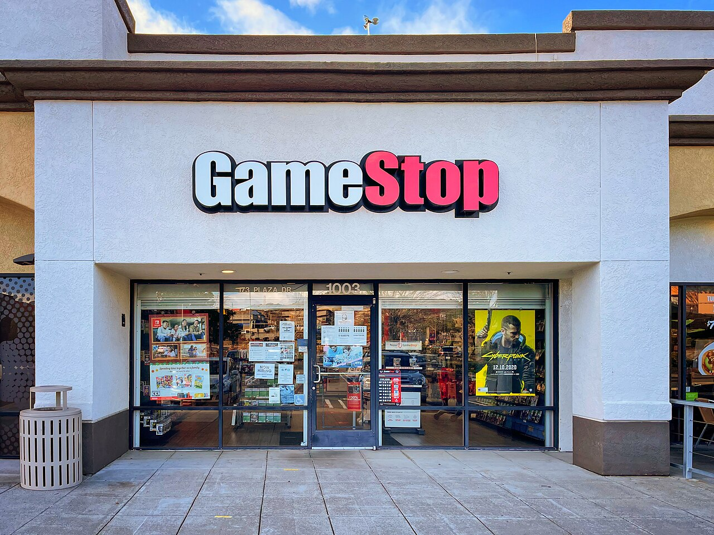
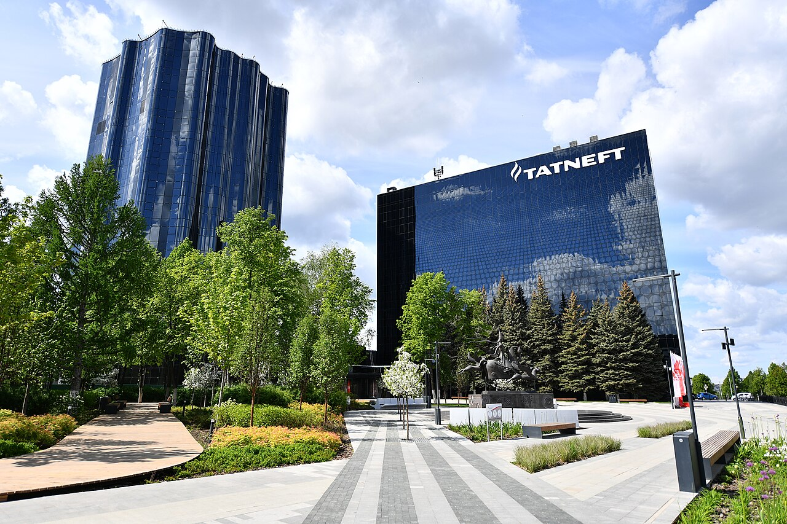
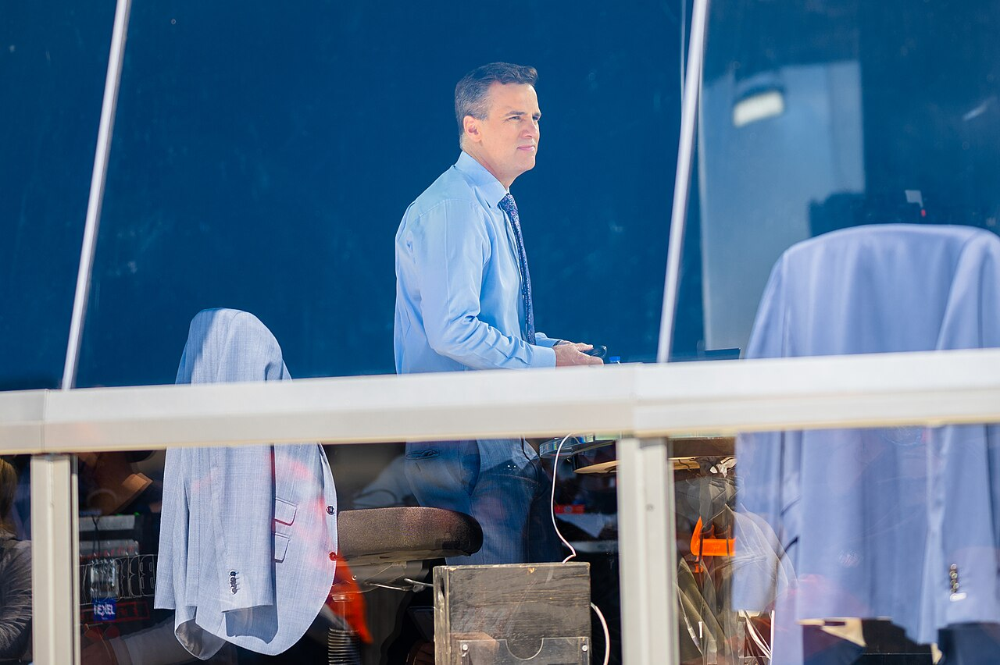

Vol. I · No. 84 · Tuesday, August 11, 2026 · 18 items · ~17 min read
Wall Street learns to lend against a graphics card, and BigLaw finally takes the private-equity call.
The Splash · Corporate · Santa Clara
Nvidia signs six of Wall Street's largest firms to build a lending market backed by its own chips
Jensen Huang, Nvidia's founder and chief executive, who told reporters he approached only six firms about the financing platforms and that none of them declined. — Prime Minister's Office of India, GODL-India, via Wikimedia Commons
Nvidia said on Monday it has signed with Apollo, BlackRock, Blackstone, Brookfield, Goldman Sachs and KKR to establish six independent compute financing platforms, aiming to mobilise more than $500 billion of third-party capital for AI infrastructure. The structure is not a fund. Each firm builds its own vehicle, described in the release as "dedicated pools of capital at significant scale at attractive rates for NVIDIA customers," and every one of them remains, in the company's own closing line, "subject to execution of the final agreements." Jensen Huang put the thesis plainly: "We began by building chips; today, we are helping create a new class of productive, investable infrastructure: AI factories. In AI, compute is revenue."
The collateral argument is the part worth reading twice. Huang's pitch is that Nvidia compute is "fungible and transferable across customers and operators," with extending the useful life of a card that a lender might otherwise assume depreciates to nothing in three years. Goldman's David Solomon said the firm was excited "to create a market for credit backed by NVIDIA compute." called compute "a scarce, mission-critical asset class." KKR's Joe Bae and Scott Nuttall noted that Nvidia is already a founding investor in their vehicle, which is a fair summary of the whole arrangement: the vendor is helping finance the purchase of its own product.
The market did not read it as reassurance. Nvidia shares extended their decline on Monday on renewed worry about circular financing and excess capacity, which is precisely the worry the announcement was designed to answer, and answers by adding six more counterparties to the circle. Wall Street's 2026 AI capital-expenditure consensus has moved to roughly $527 billion from about $465 billion at the start of third-quarter earnings season. What Nvidia is proposing is that the gap between that number and corporate cash flow be filled by structured credit, secured on hardware, marketed by the firm that makes the hardware.
"We're excited for the new opportunity to create a market for credit backed by NVIDIA compute."
— David Solomon, Goldman Sachs, August 10
Why it mattersEvery asset class that ever got financed at scale started with someone writing the first document that said what the collateral is and what happens when it fails. Six firms are about to write that document for graphics processors, and the residual-value assumption inside it is the single number the next cycle turns on.
Intel upsizes to $20bn and prices at $95, its first public share sale since 1971
Intel announced a proposed $15 billion underwritten offering of common stock before Monday's open and priced $20 billion of it early Tuesday, selling 210,526,315 shares at $95.00 with a 30-day for a further 31,578,947 shares. Net proceeds are about $19.7 billion before that option. ran the book. Settlement is expected Wednesday. Use of proceeds is general corporate purposes, "which may include, but are not limited to, capital expenditures and working capital," which is the standard formula for a company prefunding a build it has not finished sizing.
The scale of the demand is the story: an issuer does not go from $15 billion to $20 billion unless the book covered at price talk with room to spare. Intel lifted its 2026 capital-spending forecast to roughly $20 billion from $18 billion and signalled another meaningful increase in 2027, tying the raise to physical AI, purpose-built silicon, and external wafer production. The dilution is roughly three percent against a stock that has more than doubled year to date and is up about 175 percent over twelve months, which is why the announcement knocked the shares about five percent premarket on Monday and why the company sold anyway. Same-day confirmation that the underlying demand is real came from Taiwan, where TSMC reported July revenue of NT$467.58 billion, up about 45 percent year over year. Intel had funded itself on cash flow and debt since it listed. Selling common stock for the first time in fifty-five years is a statement about how much capital this cycle needs.
Why it mattersTwo AI financings printed inside eighteen hours and they solve the same problem from opposite ends of the capital stack: Nvidia is trying to make the hardware borrowable, Intel simply sold equity into strength. The second is the older answer and the cheaper one to unwind.
Paul Weiss, Quinn Emanuel and Proskauer have all taken the private-equity meeting
Three of the most profitable law firms in the United States have held preliminary conversations with private-equity groups or their bankers about selling outside investors a piece of themselves, the Financial Times reported last week, in a story Above the Law took apart on Monday. Paul, Weiss, Rifkind, Wharton & Garrison says it heard a couple of pitches months ago and did not follow up. Quinn Emanuel is reported to have spoken with about how the structure would work. White & Case has reportedly put a group of senior lawyers on studying it, and McDermott Will & Schulte is still taking meetings. Nobody has launched a process. Everybody has picked up the phone.
The vehicle is the , the same instrument private equity used to roll up veterinary practices, dental groups and physician networks around the corporate-practice-of-medicine rules. It exists to route around , which bars non-lawyer ownership and is adopted in nearly every state. What makes the reporting notable is that none of these firms needs money. Wachtell paid equity partners north of $12 million each last cycle and Quinn Emanuel booked roughly $3 billion of revenue. The stated use of proceeds is the artificial-intelligence buildout and lateral-partner acquisition, which are the two line items actually driving 2026 firm economics. Above the Law's Kathryn Rubino put the likely sequence bluntly: "The smart money says the first real deal comes from a with a smaller cap table and a founder ready to cash out, not from a lockstep marquee name."
Why it mattersA summer associate joining a firm in 2027 should understand that the partnership he is being recruited into may not be the ownership structure he retires from. The professional-independence argument for Rule 5.4 has never been tested against a capital requirement this large.
Trump answers Iran's reparations demand with one of his own, and oil settles up five percent
Asked on Monday about Tehran's conditions for reopening the , President Trump demanded compensation of his own: for Americans killed in regional attacks and for Iranian protesters killed by the government over five decades. "We're going to ask for money for the damage they've done over a 50-year period," he said. He also said frozen Iranian assets held under American control would be used to cover damage to ships in the strait, and claimed the Navy has swept the waterway for mines and now controls it. Iran's list, issued Saturday by , runs to five items: lift the naval blockade, lift sanctions, withdraw American forces from Iran's periphery, pay , release frozen assets.
Crude took the exchange for what it was. September WTI settled up roughly five percent at about $82.13 a barrel and Brent rose a comparable margin to about $87.72. Iran's foreign ministry spokesman Esmaeil Baghaei said the same day that talks with Oman were "progressing smoothly and constructively," with a shipping route map agreed and technical questions open, which is the only part of Monday that pointed toward reopening. Everything else moved the other way. The cost of the closure is not carried in the crude price alone: Gulf have run at 7.5 to 10 percent of hull value against roughly a quarter of a percent before the war, which prices most operators out of the transit before any political question is reached.
Why it mattersReparations claims are not settled by the party that pays them, and neither side here recognises the other's standing to make one. That makes both demands negotiating instruments, which is fine, except that every week they run costs the tanker market real money and the products market real supply.
Framing noteFox News frames the move as leverage recovered, reporting that Trump "turns Iran's reparations demand around with a costly demand of his own"; the Associated Press copy carried by the Washington Post frames the identical facts as an obstacle, writing that Trump "scoffs" at the demand in "a rhetorical escalation likely to complicate efforts to reopen" the strait.
Zuckerberg picks a fight about concentration, OpenAI ships a model that finds zero-days, and sovereign money buys the buildings.
AI · Menlo Park
Meta releases a 30-billion-parameter model under Apache 2.0, and Zuckerberg writes 6,500 words about who should hold the keys
Mark Zuckerberg, who published a 6,500-word essay on Monday arguing that concentrating advanced AI in a few hands is itself the danger. — Wikimedia Commons
released Muse Glimmer on Monday, a 30-billion-parameter dense multimodal model published under a permissive licence and downloadable from Hugging Face. It is built to run locally on a single consumer card, fitting a 24 or 32 gigabyte GPU after quantisation with a claimed accuracy cost under one percent, with a 131,000-token context window and more than a hundred languages. The target is the always-on local agent: long-horizon reasoning, tool calling, failure recovery, file and schedule management, with support for agent frameworks including OpenClaw. It was produced by from the closed Muse Spark series, and Zuckerberg spent part of his essay defending that technique as essential to progress.
The essay is the actual news. "The notion that AI is so dangerous that the only safe path is an extreme concentration of power seems inherently problematic," Zuckerberg wrote, which is a direct answer to the safety case that OpenAI and Anthropic have been making for their own centralisation. He warned about control of advanced systems sitting "under a select few companies, institutions or governments," urged Washington to remove barriers to , and said Meta would give developers a route to the more capable Muse Spark 1.2. Read against Anthropic's own position paper on open-weights models from 27 July, this is now a public, named disagreement between frontier labs about whether openness is a safety property or a safety failure, argued in the same week one of those labs stopped a model at a cyber threshold.
Why it mattersThe concentration argument is the strongest card the open-weights camp holds, because it does not require winning the capability debate. It only requires the listener to distrust whoever ends up holding the only copy.
OpenAI ships a cyber model that completes 95 percent of offensive-security requests, and splits access into two tiers
OpenAI split its Daybreak programme on Monday into Blue, carrying frontier general models with system-level cyber guardrails removed, and Red, carrying purpose-trained cyber models behind tighter vetting. The new model is GPT-5.6-Cyber, trained to improve at "finding zero-day vulnerabilities and developing exploit chains" and, explicitly, to "reduce refusals for certain higher-risk, cyber tasks." The number that carries the argument is the internal completion rate on advanced exploit-chain, authentication-bypass and privilege-escalation requests: 95.0 percent, against 1.5 percent for the guarded general model and 57.3 percent for the prior cyber release. The Preparedness rating is High, below Critical, which is where OpenAI paused Astra earlier this month.
The output is not hypothetical. OpenAI says the model found two previously unknown vulnerabilities in Chrome's V8 engine that chained into a sandbox escape, disclosed to Google and fixed as , plus five flaws in a widely used mobile operating system, three critical issues in a popular database, and more than four hundred privilege-escalation bugs in an operating-system kernel. Jared Atkinson, chief technology officer of , said it "has completed work in under a day that earlier models had not resolved after weeks of intermittent effort." Access carries identity verification, monitoring, approved-use limits, legal attestations and mandatory hardware security keys on individual accounts from 1 September. OpenAI also stated, unprompted, that the model "was not involved in exploiting Hugging Face."
Why it mattersA vendor that gates a capability behind legal attestations has conceded that the gate is contractual rather than technical. That is a licensing regime, and licensing regimes get litigated by whoever is standing next to the breach.
Anthropic will lease its data centres from a platform owned by Macquarie and Singapore's reserves
Anthropic, and announced on Monday a platform called to develop, operate and lease data centres to Anthropic under long-term agreements. Macquarie funds and GIC will own the platform and fund the majority of the equity for each project. Anthropic is the , not the owner. The initial focus is the United States. Investment scale was not disclosed.
Two details are worth separating from the announcement's own framing. The first is that this is a different instrument from the $10 billion, six-year compute contract Anthropic signed with Volta on 4 August: that was an offtake agreement, this is real assets and long leases, and it keeps the buildings off Anthropic's balance sheet while committing it to the rent. The second is political. Anthropic reiterated a commitment to cover electricity price increases consumers would otherwise face from these sites, which is a direct answer to the ratepayer backlash now running through Texas, Florida, Pennsylvania, Nebraska and Ohio and to the more than five hundred localities that have imposed bans or severe restrictions. The release ran through Macquarie's press channel rather than Anthropic's, which is where the terms live.
Why it mattersSovereign reserves underwriting frontier-lab compute is a durable structure with a political surface. A long lease signed by a lab is only as good as the lab, and the counterparty risk sits with a Singaporean pension pool and an Australian infrastructure manager.
Cohen rethinks a $56 billion approach, a go-shop opens in Reston, and a zero-coupon convert prints at a 65 percent premium.
Corporate · Grapevine, Texas
Ryan Cohen weighs pulling GameStop's $56bn eBay bid and asking for board seats instead

A GameStop store. The company's roughly 1,600 American locations are the asset Cohen is now reportedly offering eBay access to, rather than buying the company outright. — Wikimedia Commons, CC BY 2.0
GameStop chief executive is weighing withdrawing the $56 billion for eBay in favour of a partnership, Bloomberg reported Monday citing people familiar. The alternative under consideration would give eBay physical retail reach through GameStop's roughly 1,600 American stores, aimed at high-margin trading cards and collectibles, with GameStop seeking seats on eBay's board as part of the arrangement. No decision has been made. eBay rejected the original approach in May as "neither credible nor attractive."
The leverage is already on the register. As of 15 July GameStop disclosed a in eBay, making it the second-largest holder behind 's funds. The commercial logic is real rather than performative: GameStop's collectibles revenue rose to $365 million from $270.6 million, up 21 percent and now roughly a third of total sales, which is the exact category eBay monetises online. Matt Levine worked the episode into Monday's Money Stuff. The pivot, if it happens, converts a rejected acquisition into a supply agreement plus governance rights, which is a considerably cheaper way to get most of what the bid was for.
Why it mattersA bidder that cannot buy a company and instead sells it a commercial relationship from behind a nine-percent stake is running the activist playbook with an operating balance sheet. It is a structure that will get copied, and it does not require a financing commitment.
Bernhard Capital takes Bowman Consulting private at $43, a 58 percent premium with a 35-day go-shop
agreed on Monday to acquire Bowman Consulting Group for $43.00 a share in cash, an enterprise value of about $1.0 billion. The premium is 58 percent to Friday's unaffected close of $27.23 and 57 percent to the 30-day volume-weighted average. The board approved unanimously, and holders of roughly 15.3 percent of voting power signed . The deal carries a 35-day expiring at 5 p.m. Eastern on 13 September, with a fiduciary out to terminate for a superior proposal.
The financing is fully papered, which is what separates a signed take-private from an announced one. Bernhard funds committed $605.21 million of equity, with $550 million of debt across a term loan, a revolver and delayed-draw facilities, and Bernhard affiliates delivered a . BofA Securities is Bowman's exclusive financial adviser with Latham & Watkins as counsel; Kirkland & Ellis acts for Bernhard. Closing is expected in the fourth quarter of 2026 or the first of 2027. Bowman, a 2,500-person engineering firm public since 2021, cancelled its scheduled Tuesday morning earnings call and released second-quarter results separately. Gary Bowman, the founder, framed it as delivering "premium cash value to our shareholders" while positioning the firm "for continued growth," which is the sentence every founder says on the way out.
Why it mattersA 58 percent premium with a go-shop attached is a board buying process insurance rather than confidence. Watch 13 September: an unbeaten go-shop is the cheapest fairness record a target can buy, and a beaten one costs the sponsor its exclusivity.
Silicon Motion prices $1bn of zero-coupon converts at a 65 percent premium
Silicon Motion priced $1.0 billion of zero percent convertible senior notes due 2031 on Monday, upsized from $800 million, sold under to qualified institutional buyers, with an option for a further $150 million. The initial conversion rate is 2.6281 American depositary shares per $1,000 of principal, an initial conversion price of roughly $380.50, a over Monday's $230.61 close. The notes pay no regular interest and the principal does not accrete. Net proceeds are about $980 million, for general corporate purposes and to repay credit-agreement borrowings. Settlement is Thursday.
The terms are a clean statement of who has the leverage. The issuer takes , always paying principal in cash and electing cash or shares on the excess, which caps dilution. It also takes a call from 20 August 2029 if the shares trade at or above 130 percent of the conversion price. Investors take a put on 15 August 2029 and on a fundamental change, so the practical maturity is three years rather than five. Each represents four ordinary shares. A zero-coupon convert at a 65 percent premium is the cheapest financing available to a semiconductor issuer right now, and the price of it is a long option written on your own equity.
Why it mattersFree money is never free, it is optionality sold at a level someone thinks is generous. The convert market clearing zero-coupon paper at a two-thirds premium is the same demand signal that let Intel upsize by five billion overnight.
Source: GlobeNewswire, via The Manila Times ↗ · Single-source coverage: the pricing release had not been picked up by an independent bylined outlet at press time.
Law & the Courts
Two orders come back narrower than the ones the Court struck, a defendant cannot see the evidence it needs, and Alito sees vultures.
Law · Washington
Vladeck reads the new birthright-citizenship orders and finds the rejected test moved one noun to the left
The Supreme Court, which held on 30 June in Trump v. Barbara that the Citizenship Clause does not turn on a parent's immigration status. Two new executive orders signed on 6 August quote that opinion back at it. — Wikimedia Commons
In One First No. 243, published Monday morning, takes apart the two executive orders President Trump signed on 6 August purporting again to limit birthright citizenship, five weeks after losing . The mechanism is small and precise. The orders quote the majority's phrase "for whom no extraterritorial fiction applie[s]" and reattach the qualifier to the parents, when the Court had attached it to the child. The majority's actual sentence made a citizen of any child born "under the protection of" the United States, that is, "any child for whom no extraterritorial fiction applied," owing a natural allegiance and therefore obedience to the Nation. The Court also observed that "mother," "father," "lawful" and "temporary" appear throughout and nowhere in the Fourteenth Amendment.
Vladeck's assessment is not that the orders are frivolous. Parts of them, he writes, "are likely to survive judicial review either because (1) they're conditional; or (2) they merely restate what existing law already provides." But "the important parts are in direct conflict not just with the Fourteenth Amendment itself, but with Barbara's reaffirmation of the breadth of the ." The procedural detail underneath is the tell: Trump promised publicly to seek rehearing in Barbara and then let the deadline lapse without filing. The same post notes that the administration's and red states' mail-in-ballot applications have been fully briefed since 4 August with no ruling, and that Friday's 2-1 D.C. Circuit ballroom decision reaffirmed Congress's control over federal property and the absence of any authorisation for the construction.
Why it mattersReissuing a struck policy with the losing test relocated inside a quotation from the opinion that struck it is a distinct genre of executive response, and courts have very few tools for it beyond doing the whole thing again.
A judge denies the SPLC discovery into prosecutors' motives, and denies dismissal for lack of that evidence
Chief Judge of the refused on Friday to dismiss the government's indictment of the , and also refused to let it take discovery into why it was charged. The organisation was indicted in April on eleven counts of wire fraud, false statements to a federally insured bank and conspiracy to commit money laundering, on allegations that it defrauded donors by routing money to informants who infiltrated white-supremacist groups. It moved on 26 May to dismiss for , or in the alternative for discovery into prosecutorial motive.
The holding states the loop without apology. "The SPLC has failed to offer some evidence tending to show animus on the part of the prosecutors involved in bringing this case and that such animus resulted in the prosecution, the showing required for discovery," Marks wrote. "Because it cannot satisfy that standard, it necessarily fails to satisfy the higher standard that would entitle it to dismissal of the indictment." That is the doctrine working as designed, and it is also why the vindictive-prosecution defence almost never succeeds: the evidence sits with the party whose motive is at issue. Marks was unimpressed with everyone, adding that the briefing is "like much of our modern political discourse, heavy on heated rhetoric, better suited for cable news, or a podcast," and that it "emphasizes noise over substance." The government's position, quoted in the opinion, is that the indictment "was secured based on the law and the facts uncovered during a federal investigation."
Why it mattersThe threshold that gates discovery is the whole ballgame in selective and vindictive prosecution claims, and it has just been applied to a legal institution rather than an individual. Whatever one thinks of the SPLC, the standard it failed is the standard everyone else gets.
Alito, twenty terms in, says he is staying and compares the retirement pressure to vultures
Justice Samuel Alito, 76, told the Wall Street Journal he is not going anywhere. "Obviously I'm here for another term," he said, in an interview published Friday whose fuller passages circulated Monday. On the campaign conservatives have run urging him to retire while the White House and Senate are aligned: "It's not pleasant, in the sense that it's a reminder of mortality. It's like, what are those vultures doing up there? They are flying around. But it goes with ." He also rejected the framing that his votes track the administration: "I vote in every case the way I think the case should be decided. If that means a high correlation with what Trump wants, fine. If it means zero correlation with what Trump wants, fine as well."
The remarks land six weeks after NPR incorrectly reported on 30 June that he was stepping down, a story it retracted. Alito was confirmed in January 2006 and has just completed his twentieth term; begins in under two months. is the practice he is declining to perform, and declining it out loud is unusual: the convention is silence until a letter arrives. Above the Law noted the same evening, as court-expansion talk re-enters mainstream Democratic politics, that the Constitution does not fix the Court's size. Congress does, and it once shrank the Court to seven and restored it to nine inside three years.
Why it mattersA justice who says out loud that he will not time his exit to a political calendar removes the single most consequential variable from the next two years of appointment planning, at least until he changes his mind.
Ukraine's drones reach the Volga, and Tehran fills six command posts the war left empty.
News · Nizhnekamsk, Tatarstan · cross-spectrumLLC
Ukrainian drones hit Tatneft's TANECO refinery 800 kilometres east of Moscow, killing thirteen

Tatneft's headquarters. The company's TANECO complex at Nizhnekamsk, one of Russia's newest refineries, was struck on Monday in the deepest deadly Ukrainian strike of the war. — MiklMS, CC BY-SA 4.0, via Wikimedia Commons
Ukrainian long-range drones struck industrial and civilian targets at Nizhnekamsk in the Republic of on Monday, roughly 800 kilometres east of Moscow. Tatarstan authorities put the toll at at least thirteen dead, including a child, with wounded counts reported between 39 and 75 through the day; seven Uzbek citizens and one Tajik citizen were among the dead. Ukraine's General Staff confirmed it struck Tatneft's refinery and recorded a fire at the facility. Russia claimed 456 drones intercepted nationwide overnight. The same package brought a blackout in occupied Simferopol and fires in Donetsk Oblast.
The distance is the point. TANECO processes more than 16 million tonnes of crude a year and sits beside the petrochemical works, making the zone a single high-value cluster that had, until Monday, been treated as out of range. Ukraine's has spent the year working through Russian refining capacity, and the Syzran strike earlier this month sat several hundred kilometres closer. The civilian toll is what separates this one from the rest of the campaign, and it is the fact every wire led with.
Why it mattersRussian refining, not Russian crude, is the pressure point sanctions never quite reached, and the drone campaign has been doing what the sanctions regime could not. Extending the range past the Volga reprices the risk on every Russian energy asset a lender or an insurer still touches.
Iran's Supreme Leader fills six top military posts, confirming Vahidi at the head of the Revolutionary Guard
issued decrees on Monday appointing six senior commanders to posts left vacant by American and Israeli strikes. Ali Abdollahi becomes chief of staff of the armed forces, with the former Army Ground Forces commander Kioumars Heydari as his deputy. is formally named commander-in-chief of the and promoted to major general, having held the role in an acting capacity since March. Mostafa Izadi becomes his deputy, Ali Azmaei takes the IRGC Navy, and Hossein Taeb takes the .
One of the six matters more than the others for anyone watching a shipping route. The IRGC Navy operates the fast-attack craft, the mines and the anti-ship missiles in the Strait of Hormuz, so Azmaei's appointment names the officer who physically controls whether the water reopens, on the same day the reopening talks went backwards in Washington. Iranian state media, which is the only channel carrying the text of the decree, frames the appointments as honouring the "martyrdom" of the former IRGC commander Major General Mohammad Pakpour, killed in the opening stage of the war, at the hands of the "Zionist-American enemy." Coverage outside Iran is thin and skewed: Fox News is the only outlet on the cross-spectrum roster that carried it in window, reading the timing as preparation for prolonged confrontation. Al Jazeera, The National and Iran International each covered it, and each read it differently.
Why it mattersReconstituting a command structure after decapitation is the clearest available signal about whether a state expects to negotiate or to continue. Six simultaneous confirmations, including a navy chief for a closed strait, is not the paperwork of a government preparing to reopen it next week.
A three-month blackout ends before preseason, three confederations put it in writing, and Payday gets a producer.
Culture · Philadelphia
Comcast and Disney settle the NFL Network carriage fight three days before preseason

NFL Network, which returns to Xfinity on Monday's agreement after more than three months dark. It is the first major carriage dispute involving the channel since ESPN acquired it in February. — Erik Drost, CC BY 2.0, via Wikimedia Commons
Comcast reached a with Disney on Monday restoring NFL Network and NFL RedZone to Xfinity, ending a blackout that had run since just after the April draft. Terms were not disclosed. What was disclosed matters more: sources told Front Office Sports the deal did not move NFL Network to a cheaper, more broadly distributed tier, which means Disney held the line on , the single point most carriage fights actually turn on. Disney had sought higher fees and additional live game inventory. What Comcast got back is unclear.
This is the first major carriage dispute involving NFL Network since ESPN's acquisition of the channels closed in February, a transaction that also handed the league a 10 percent equity stake in ESPN, so the party negotiating for carriage of the league's channel is now part-owned by the league. The affected base is roughly 10.67 million Comcast cable subscribers, and the deal landed before and RedZone were needed on Thursday for Packers and Steelers. The structural overhang is the more interesting number: Comcast is mid-way through , and YouTube TV is on track to pass it as the largest American pay-television distributor as soon as next year.
Why it mattersEvery carriage settlement is a bet on how many subscribers the distributor still has when the term ends. Disney won this one on packaging, which is the right thing to win, and it may be the last cycle in which Comcast is the counterparty that matters.
Three confederations sign an open letter accusing Infantino of a fundamental breach of trust
UEFA, CONCACAF and the AFC published a joint "open letter to the football family" on Monday, signed by all three presidents and their general secretaries. The trigger is the collapse of , the plan to sell outside investors a stake in the World Cup. "There remains no recognition that attempting to sell an interest in the FIFA World Cup was a profound failure of judgement," the letter reads, "not just a procedural misstep, but a fundamental breach of trust with the very institutions FIFA exists to serve." The sharper line follows: "It is not the conduct of a custodian of the game, but of one who believes the game is answerable to him."
The letter also attacks the process FIFA used to apologise. The emergency meeting in Morocco on 5 August invited one elected official, sat far from Zurich, and produced a review FIFA will conduct itself; the confederations want a third party. The arithmetic behind the signatures is the reason to take it seriously. Of FIFA's 211 member associations, UEFA holds 55, the AFC 46 and CONCACAF 35, which is 136 against 75 for CAF, CONMEBOL and the OFC combined, and Infantino stands for reelection in March 2027. is the most-named potential challenger; is the engine. US Soccer backed the CONCACAF position hours later. CAF is unanimously behind Infantino, CONMEBOL declines to push him out, and Mexico stayed with the president. FIFA did not comment.
Why it mattersGovernance fights inside sports bodies are usually settled by whoever controls the commercial cycle, and Infantino closed a $15 billion one a month ago. What has changed is that the objection is now in writing, signed, and votable.
Starbreeze licenses Payday to VICE Studios and 50 Cent's G-Unit for the screen
announced on Monday that it has partnered with and Curtis Jackson's to executive produce a screen adaptation of Payday. Variety had the exclusive. The disclosed franchise economics are the useful part for a listed issuer: Payday has run since 2011, engaged more than 50 million players and generated more than $400 million of lifetime gross revenue. No writer, showrunner, network or streamer is attached, and no budget or timeline is confirmed, so this is a partner announcement rather than a greenlight.
Read it as a licensing programme rather than a movie. Starbreeze has spent 2026 pushing the trademark outward: a Gamefam Roblox title in April, a Fast Travel Games virtual-reality title in March, a UEFN game announced the same day as this. The screen deal is the highest-value piece of the same strategy, and the structure is the ordinary one, in which the publisher grants exploitation rights while retaining the underlying mark and, typically, approval rights and a back-end participation. Jackson said the partnership "gives us the chance to build something big, a high-energy franchise that pushes the heist genre forward." Starbreeze chief executive Adolf Kristjansson was more direct about the fit: "PAYDAY has always been about the fantasy of getting away with it. Curtis and G-Unit don't do subtle, and neither do we."
Why it mattersThe interesting document here is not the show, it is the licence: a small listed developer converting a trademark into recurring third-party revenue across four formats in five months, without financing any of it.